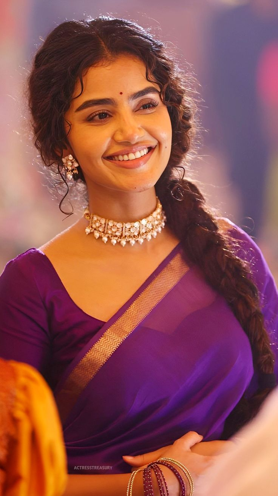

There are a few prominent individuals named Salman. Salman of Saudi Arabia is the current King of Saudi Arabia, while Salman Khan is a well-known Indian actor. Additionally, there is Salman Khurshid, a politician, and Salman Butt, a cricketer. Salman of Saudi Arabia: Born December 31, 1935. Became King of Saudi Arabia in 2015. His full name is Salman bin Abdulaziz Al Saud. According to Britannica, he is the 25th son of King Abdulaziz, the founder of Saudi Arabia. Prior to becoming King, he held various high-ranking positions, including Governor of Riyadh province for many years. Salman Khan: Born December 27, 1965, in Indore, India. An Indian actor, film producer, and television personality. Known for his roles in Hindi films and television shows. Has starred in numerous commercially successful movies. According to IMDb, he is also a philanthropist and runs the Being Human Foundation. Salman Khurshid: An Indian politician and lawyer. Served as a Member of Parliament and held various ministerial positions. Was the Minister of Law and Justice in the Government of India. Salman Butt: A Pakistani cricketer and former captain of the Pakistan national cricket team. Played in Test matches, One Day Internationals, and Twenty20 Internationals.
Anupama Parameswaran Biography: Age, Education, Career ...Anupama Parameswaran is an Indian actress and model, primarily known for her work in Telugu, Malayalam, and Tamil films. She gained widespread recognition for her role as Mary George in the Malayalam movie Premam (2015). Here's a more detailed look at her background and career: Early Life and Education: Born on February 18, 1996, in Irinjalakuda, Kerala, India. Studied Communicative English at CMS College, Kottayam. Acting Career: Began her acting career with Premam (2015). Has since appeared in numerous successful films across different languages, including A Aa (2016), Sathamanam Bhavati (2017), Karthikeya 2 (2022), and more. Known for her natural and expressive performances, often playing girl-next-door roles. Other Notable Information: She is also a singer and has lent her voice to a few songs in films. Active on social media, sharing updates and interacting with fans. Her signature look includes curly hair and expressive eyes. Her work has earned her nominations for awards like the SIIMA Awards and Zee Cine Awards Telugu. She has a younger brother, Akshay.
Allu Arjun is an Indian actor who works in Telugu cinema. He is one of the highest-paid actors in Indian cinema and has been featured in Forbes India's Celebrity 100 list since 2014. Allu Arjun's accolades include a National Film Award, six Filmfare Awards, and three Nandi Awards